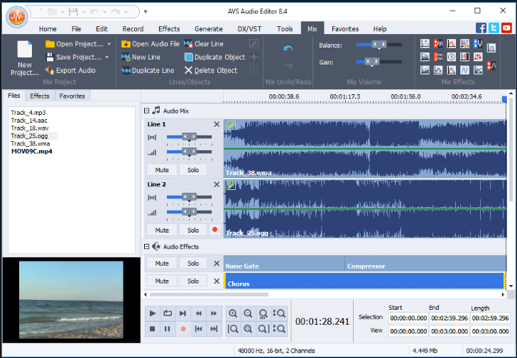
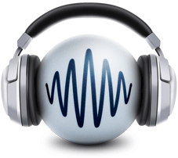

AVS Audio Editor
Programos AVS Audio Editor langas

Adobe Audition. Tai yra profesionali garso apdorojimo ir redagavimo programa.
Avs audio editor Programa
Avs audio editor tai programa - garso takelio redagavimo programa,
